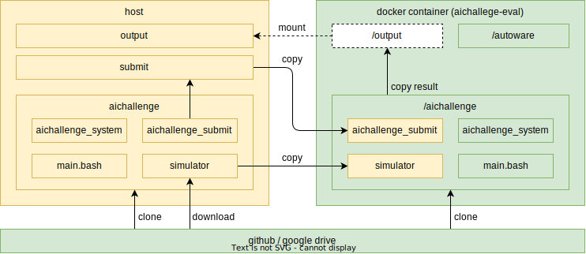

ワークスペース
大会用Dockerイメージの準備
Dockerイメージのビルド
以下のコマンドで大会用のDockerイメージをビルドします。
cd aichallenge2024
./docker_build.sh dev
# ビルドできたか確認
docker images
# 以下のような行が含まれていれば成功しています。
# aichallenge-2024-dev latest df2e83a20349 33 minutes ago 8.9GB
Dockerコンテナの起動
# GPU搭載の方は以下
cd aichallenge-2024
./docker_run.sh dev gpu
# GPU非搭載の方は以下
cd aichallenge-2024
./docker_run.sh dev cpu
Dockerコンテナの停止
コンテナが起動しているターミナルで下記コマンドを実行します。以上でセットアップは終了となります。
exit
大会環境の起動
本節では大会環境を実行方法を解説します。以下のコマンドはすべてコンテナ内から実行するため、まずは「Dockerコンテナの起動」に従い大会用のコンテナを起動してください。
Autoware
コンテナを起動したターミナル(コンテナ内)で以下を実行します。
cd /aichallenge
./build_autoware.bash
Autowareのビルド後、以下のコマンドを実行します。
./run_autoware.sh
下記の様な画面が表示されたら起動完了です。終了するにはターミナル上でCTRL + Cを入力します。

AWSIM in Docker
コンテナを起動したターミナル(コンテナ内)で以下を実行します。
cd /aichallenge
./run_simulator.bash
下記の様な画面が表示されたら起動完了です。終了するにはターミナル上でCTRL + Cを入力します。

変更点の取り込み
大会環境のアップデートがあった際には以下を実行してください。
Dockerのupdate
docker pull ghcr.io/automotiveaichallenge/autoware-universe:humble-latest
Repositoryのupdate
cd aichallenge2024 # path to aichallenge2024
git pull origin/main
TroubleShooting
Q. docker_run.sh: 行 35: rocker: コマンドが見つかりません
A. rockerのインストールをお願いします。
Q. WARNING unable to detect os for base image 'aichallenge-2024-dev', maybe the base image does not exist
A. Dockerイメージのビルドをお願いします。
ワークスペースの構成
docker-dev

docker-eval
